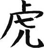

İmparator Meiji sarayda yavaş yavaş büyürken 1850’lerden itibaren Japonya’daki sosyal huzursuzluklar had safhaya ulaşmış. Bu huzursuzluklar toplumun iç dinamiklerinden kaynaklandığı kadar, dış etkenlerin kaşıması ile de hızlanmış. Ülkenin kapıları bir kez “dost” yabancılara açıldıktan sonra Japonya bir daha rahat yüzü görmemiş.
Yüzyıllarca dış dünyaya kapalı iken bu sürede diğer ülkelerin bilim ve teknolojide çok ilerlediğini görmenin Japonlar üzerinde travmatik bir etkisi olmuş. Amerikalılar ve İngilizler başta olmak üzere emperyal güçler, misyonerleri, kültür elçileri ve eğitim kurumları aracılığı ile ürkek ve alttan alta bir yabancı hayranlığı uyanan toplumu etkilemeye başlamışlar.
Tabii ki katı ve merkezi shogun yönetimi yabancı güçler için güven telkin eden bir idare değilmiş. Aynı sıralarda, Tokugawa hanedanına zaten hiç ısınamamış olan iki büyük klan, Satsuma (Aklınıza mandalina gelmesin) ve Choshu’lar, güçlerini birleştirerek sonno joi (İmparatoru başa geçir, barbarların canına oku) hareketini başlatmışlar. İyice zayıflayan shogun rejimi cılız birkaç çatışmadan sonra yerini efendice imparator Meiji’ye bırakmış.
Hareketin üç önemli ismi Satsuma daimyosu Saigo ile Kido ve Okubo imiş. Amaçları, İmparatoru yeniden etkin bir şekilde iktidara taşımak olduğu kadar, samuraylığın saygınlığını devam ettireceği, ülkeyi soyluların yöneteceği, geleneklerin korunacağı bir yönetim sistemi kurmakmış. Bu çok iyi eğitim almış, heyecanlı jön-Japonlar, neo-samuraylar, imparator Meiji’nin kankaları olmuşlar.
On beş yaşındaki imparator Meiji, gösterişli bir tahtırevan ve saray şürekası ile Kyoto’dan çıkıp Edo’nun yolunu tutmuş. Hayatında ilk kez saraydan dışarı çıkan imparator, yol boyunca fakir köylüleri, gariban çiftçileri, balıkçıları ve zavallı halkı gördüğünde gerçekle yüz yüze gelmiş. Edo’da saraya yerleştiğinde, yolda gördüğü tatsız manzarayı unutmak için kendini içkiye, hareme, zevk-ü sefaya verip işlerin çoğunu üç kafadara havale etmiş.
Üçlünün içinde en harbi delikanlı savaş bakanlığını alan Saigo imiş (Japonlar “savunma” falan diye kıvırmadan harbiden “savaş” bakanı demişler). Okubo ve Kido biraz daha akademik, diplomatik ve sosyolojik takılmışlar. Saigo’nun Meiji’ye saygısı gerçekten büyükmüş; onun, daldığı eğlence hayatından sıyrılıp olgunlaşması için uğraşmış. Üç yüz kişilik bir haremi saraydan kovmuş, Meiji’yi silkeleyip kendine getirmiş, ama kendi başına gelecekleri tahmin edememiş... Besle imparatoru, oysun gözünü.
Kido ve Okubo, dünyada neler olup bittiğini öğrenmek için ellerinde uzun bir alışveriş listesiyle iki yıllık bir Avrupa-Amerika turuna çıkmışlar. İkilinin bu seyahatten çok iyi harcırah kaldırdığı, birer ev, araba ve yazlık aldıkları söylenir; ama asıl önemlisi, dünyadaki siyasi gelişmelerden silah teknolojisine, idari sistemlerden ekonomik reformlara kadar birçok konuda gözleri açılmış bir şekilde Japonya’ya dönmüşler.
Bu sırada Saigo, yeni ve modern bir ordunun kurulması ile samuraylık sisteminin devamı arasında bir ikilem yaşar, Meiji ile beyin fırtınası yapar dururmuş. Samuraylığın etik kodu bushidonun yüzyıllardır Japon toplumunu, ahlak yapısını ve geleneklerini şekillendirdiğini düşündüğü için bu sistemin bir şekilde devamını istiyormuş.
Ancak dünya turu sırasında modern orduları hayranlıkla gözlemleyen Okubo, samurayları sadece baş ağrısı asalaklar olarak görüyor, batılı toplumlardan yardım alarak sıfırdan yeni bir ordu kurulmasını savunuyormuş. Görüşler çatışmış, fikir ayrılıkları büyümüş, Meiji’nin gönlü de Okubo’dan yana kayınca Saigo kös kös memleketine geri dönmüş.
Bundan sonrasını meşhur Son Samuray filminden izlemişsinizdir. Okubo, Tom Cruise’u yardım için Japonya’ya çağırır. Penelope Cruz’dan yeni ayrıldığı için kendini içkiye vuran eski F-14 pilotu Tom Cruise yeni bir ordu kurar, amma velakin “son samuray” Saigo’nun insanlığından etkilenir, onun tarafına geçer, savaşta herkes ölür, bir bu ayakta kalır, vs.
Gerçekte de imparator Meiji’nin modern orduları son samuray Saigo ile savaşır. İki iyi dost karşı karşıya gelmiştir, sonunda Saigo kaybeder ve her onurlu samurayın yaptığı gibi bu dünyadan ayrılırken arkasında bir haiku bırakır:
Kış mevsiminin acı soğuğunu umursamam
Benim içimi korkuyla dolduran
İnsanların kalplerinin soğukluğudur
Meiji ilk olarak başkenti Kyoto’dan Edo’ya taşır ve şehrin yeni ismi “doğu başkenti” anlamına gelen “To-kyo” olarak belirlenir. Ülke hızla bir reform sürecine girer ve Japonlar Avrupa Birliği mevzuatı dayatması olmadan, kendi iradeleri ile çağdaş ve demokratik bir devlet sistemi kurmaya çalışırlar. Japon tarihinin bu dönemi Türkiye Cumhuriyeti’nin ilk yıllarına, Atatürk dönemine çok benzetilir.
Bakufu yönetimi tümüyle lağvedilir ve oldukça kısa ve öz bir anayasa kabul edilir. Halen ayakta kalan tüm daimyolar topraklarını teslim ederler, ancak yeni eyalet sisteminde çoğu, eski bölgelerinin yeni yerel yöneticileri olarak atanır. Sonuçta o kadar derebeyini bir anda safdışı bırakmak kolay değildir.
Meiji döneminin önde gelen figürlerinden Ito ve Yamagata yeni güç odaklarının belirlenmesinde ve devlet bürokrasisinin şekillenmesinde önemli rol oynamışlardır. Meiji’yi iktidara taşıyan samurayların ardından imparatorun yeni kankası olan Ito, Prusya başta olmak üzere yurtdışında uzun zaman geçirmiş, zeki, hırslı bir kardeşimizdir. Özellikle Bismarck’tan çok etkilenen Ito, anayasanın hazırlanmasında ve idari yapının oturtulmasında kilit rol oynamıştır. Yamagata ise daha militer bir kardeşimizdir. Modern ve güçlü bir ordunun kurulması, gizli bir polis teşkilatının, dolayısıyla derin devletin oluşturulması gibi görevleri üstlenmiştir.
Sonuçta yeni bir meclis kurulur, bakanlıklar ve diğer idari mekanizmalar tasarlanır, seçimlerin yapıldığı monarşik demokrasimtrak bir sistem geliştirilir. Toprak ve vergi reformu yapılır, yerel yönetimlerin rolü tanımlanır, imparatorun tanrısal kimliğinin kaynağı olan Şinto dini öne çıkarılırken samurayların gözdesi Budizm ikinci plana itilir, Hıristiyanlık yeniden serbest bırakılır ve en önemlisi diğer ülkeler ile hızla diplomatik, askeri, ekonomik ilişkiler geliştirilir.
Soylu kesim için her şey bitmiş değildir; sonuçta bu yaşanan bir halk hareketi değil, imparatorla çevresindeki asillerin yeniden iktidara gelişidir. Edo döneminin soylularının çoğu yeni devlet yapısında önemli bakanlıklara, kilit görevlere, büyükelçiliklere, mülki ve idari görevlere getirilir. Bir anlamda şekilsel bir değişim yaşanmış, sistem güç odakları arasındaki itişmeye, büyük balığın küçüğü yutmasına uygun olarak tasarlanmıştır. Yani, düzen değişmiş ama düz(ül)en aynı kalmıştır.
Ito ülkede bürokratik oligarşiyi yerleştirirken Yamagata ordu, polis, gizli polis, daha gizli polis, ergenekon ve hatta yeraltı örgütlerini, yani bugünkü yakuzanın ecdadını kendi elleriyle organize ederek ülkenin kontrolünü eline geçirmiştir. Ito’nun sivil gücü Yamagata’nın militarizmine karşı dayanamaz ve zamanla Yamagata ultra-milliyetçi, saldırgan, gözü kara politikalarını ülkede egemen kılar.
Aynı zamanda ülkede başlayan değişim rüzgârı baş döndürücüdür. Japonya, dünyaya, değişime, teknolojiye kapalı kalınan 300 yılın acısını çıkarmak için inanılmaz bir sanayileşme hareketi başlatır. Birçok Japon genç yurtdışına eğitim amaçlı gönderilir, sanayi kalkınma hamlesi başlatılır ve Japonya çok kısa sürede dünya devleri ile eşit düzeye gelir. Bana kalırsa Japonya’nın bu dönemde gerçekleştirdiği kalkınma hamlesi, İkinci Dünya Savaşından sonraki kalkınmalarından çok daha etkileyici ve takdire şayandır; 1950’lerdeki kalkınma hareketinin temeli 1800’lerin sonlarındaki atılıma dayanır.
Ülkede dış ticaret odaklı bir sanayileşme modeli oturtulur ve Mitsubishi, Mitsui gibi dev zaibatsular (büyük dış ticaret holdingleri) kurulur. Japonya hammadde ithal edip sanayi ürünleri satarak tüm Asya pazarını ele geçirir. Tabii bu noktada hızla büyüyen ekonomi hammadde sıkıntısına toslar. Hâkim ideoloji olan ultra milliyetçi akımın sözcüleri bir de bakarlar ki, Japonya yüzyıllardır uykuda iken, Fransızlar Vietnam’ı, İngilizler Singapur’u, Hollandalılar Endonezya’yı, Amerikalılar Filipinler’i, Amerikalılar, Almanlar ve İngilizler hep beraber Çin’i sömürgeleştirmişlerdir. Japonların başı kel midir? Değildir. “Asyayı batılı sömürgecilerden kurtarıp biz sömürsek daha iyi olmaz mı” fikri ağır basar.
Kendi mıntıkalarında elâlemin at koşturmasından hırslanan Japonlar kısa zamanda emperyal kıpırdanmalara başlarlar. Rusların Trans-Sibirya demiryolu projesini gerçekleştirmesi halinde Kore ve Mançurya’nın da güme gideceğini hisseden Yamagata derin ve karanlık ilişkiler yumağını da kullanarak bölgede huzursuzluk yaratır. Çin de gözünü bu bölgeye dikmiştir; 1894-1895’te Çin ve Japonya, Kore için kapışır. Hezimete uğrayan Çin üstüne üstlük Tayvan’ı da savaş tazminatı olarak Japonya’ya verip kenara çekilir.
Bu arada Anglosakson dünya Japonya’da nüfuzunu artırmaktadır. Özellikle ABD Japonya ile çok güçlü politik, ekonomik, kültürel bağlar kurmakta, misyonerleri bu ülkede çok aktif çalışmakta ve ilişkileri güçlendirmektedir. ABD, Asya kıtasında tek güvenilir müttefik olarak Japonya’yı görmüş ve uzun vadeli stratejisini Japonya üzerinde etkin olmak temeline oturtmuştur. Bu dönemde ABD’nin Quaker tarikatı başta olmak üzere çeşitli güç odaklarının Japonya üzerindeki hâkimiyeti görülür. ABD’nin Japonya’daki finansal yatırımları artar, iki ülkenin ekonomik güçleri arasında karmaşık bir ilişkiler yumağı geliştirilir.
O sıralarda İngiltere ile bir askeri işbirliği anlaşması yapan Japonya, biraz bu desteğin gazı, biraz da milliyetçilik rüzgârlarıyla Rusya’ya kafa tutar ve Asya kıtasındaki hâkimiyetini güçlendirmek için 1905’te Ruslarla sıkı bir deniz savaşına girişir. (Bu arada Ertuğrul firkateyninin ziyareti ile başlayan Türk-Japon ilişkilerinin bir yansımasının da Osmanlı donanmasının Rusları Karadeniz’de oyalayarak okyanuslara açılmalarını engellemek, böylece Japonya’nın elini güçlendirmek olduğu rivayet edilir.) Tüm dünyanın tartışmasız bir Rus galebesi beklediği savaşta Japonya büyük bir zafer kazanarak tüm bahisçileri yanıltır ve “iddaa” kuponlarında Japonya’ya oynayanları servet sahibi yapar. Bu zafer, tarihte oryantal bir imparatorluğun batıya karşı kazandığı ilk zafer olarak bile yorumlanır.
Birinci Dünya Savaşının sonuna kadar milliyetçi yapısını koruyan Japonya’da askeri harcamalar ekonomik büyümenin lokomotifliğini yapmış ve ülkenin dünya güçleri arasına girmesi sağlanmıştır. İngilizlerle yapılan ittifakın da yardımıyla Birinci Dünya Savaşında kazanan tarafta olan Japonya, Batılı güç odaklarını ürkütmeden, sessiz sedasız sürdürdüğü savaşın ardından Çin’in Almanya tarafından kontrol edilen bölgelerine yerleşmiştir.
Kısacası Meiji dönemi, büyük bir idari reform, baş döndürücü bir ekonomik kalkınma ve Japonya’nın emperyalist bir güç olarak dünya sahnesine çıkışıyla sonuçlanmıştır... diyebilir miyiz? Deriz...